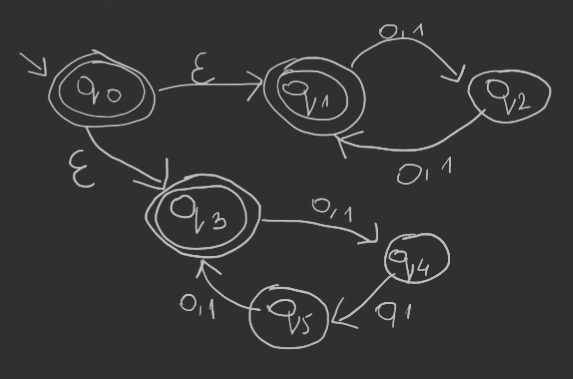
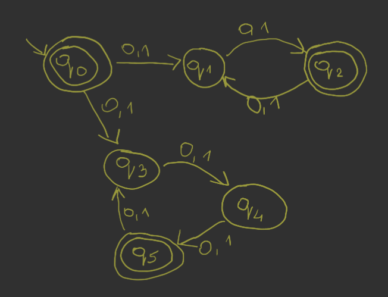
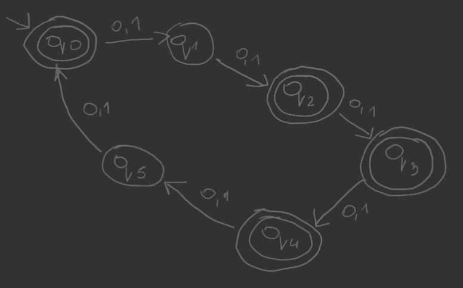
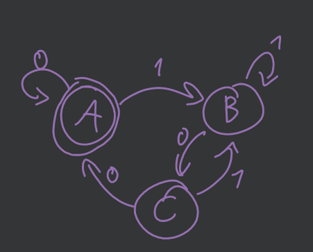
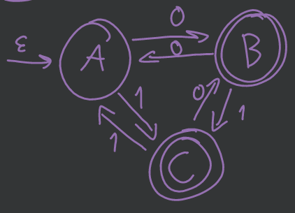

Podać deterministyczne automaty skończone (DFA) akceptujące następujące języki nad alfabetem \(\{0,1\}\).
zbiór wszystkich łańcuchów o zakończeniu \(101\)
zbiór wszystkich łańcuchów zawierających trzy kolejne jedynki
zbiór wszystkich łańcuchów, w których każdy blok złożony z pięciu kolejnych symboli zawiera co najmniej dwa zera
Zakładamy, że słowa krótsze niż 5 nie należą do języka.
zbiór wszystkich łańcuchów zaczynających się od \(1\), które interpretowane jako binarna reprezentacja liczby całkowitej są wielokrotnością \(7\)
zbiór wszystkich łańcuchów, w których piąty symbol od końca jest zerem
Podać niedeterministyczny automat skończony (NFA) akceptujący następujący język: zbiór wszystkich łańcuchów zer i jedynek, w których dziesiąty symbol od końca jest jest jedynką. Jaki jest związek między rozwiązaniem tego zadania a zadania 1.5.?
W zadaniu 1.5. liczba stanów rośnie wykładniczo właśnie przez to, że mamy tam DFA. Tutaj mamy NFA i możemy pozwolić na taki „niedeterminizm” przy stanie \(q_0\) gdzie znak \(1\) może oznaczać przejście do następnego stanu, ale może też tego nie oznaczać.
Skonstruować automaty skończone równoważne z następującymi wyrażeniami regularnymi:
\(10 + (0 + 11)0*1\)
\(01\big[ ((10)^* + 111)^* + 0 \big]^*1\)
(bez części na różowo mamy NFA)
\(((0 + 1)(0 + 1))^∗ + ((0 + 1)(0 + 1)(0 + 1))^∗\)
NFA z \(\epsilon\)-przejściami

NFA

DFA

Skonstruować wyrażenia regularne odpowiadające następującym automatom:
\((\{A, B, C\}, \{0, 1\}, \{(A, 0) \to A,(A, 1) \to B,(B, 0) \to C,(B, 1) \to B,(C, 0) \to A,(C, 1) \to B \}, A, \{A\})\)
\((1+0)^*00 + 0 \epsilon\)

\((\left\{ A,B,C \right\}, \left\{ 0,1 \right\},\\\left\{ (A,0) \to B, (A,1) \to C, (B,0) \to A, (B,1) \to C, (C,0) \to B, (C,1) \to A, \right\},\\ A, \left\{ B,C \right\})\)
\((0+1)^* (10 + 01) + 0 + 1\)

Udowodnić następujące tożsamości dla wyrażeń regularnych \(r\), \(s\) i \(t\), przy czym \(r = s\) oznacza identyczność języków opisywanych przez \(r\) i \(s\).
\((r + s) + t = r + (s+t)\)
\((rs)t = r(st)\)
\[ \dots \]
Udowodnić lub obalić następujące tożsamości dla wyrażeń regularnych r, s i t:
\((rs + r)^* r = r(sr + r)^*\)
Pokażemy indukcyjnie, że \((rs + r)^n r = r(sr + r)^n\).
\(n = 1\)
\(n \implies n+1\)
\((r + s)^* = r^* + s^*\)
Wyrażenie nieprawdziwe.
Po lewej stronie możemy mieć słowo \(rsrs\), które nie jest akceptowane przez prawą stronę.
Lewa strona zezwala na mieszanie się znaków, prawa strona dzieli litery na dwie homogeniczne części.
\(s(rs + s)^* r = rr^* s(rr^* s)^*\)
Wyrażenie nieprawdziwe.
Lewa strona zawsze zaczyna się od \(s\), kiedy prawa zaczyna od \(r\).
Udowodnić, że DFA akceptujący język słów nad alfabetem \(\{0, 1\}\), w których piąty symbol od prawego końca jest jedynką, musi mieć co najmniej \(32\) stany.
Załóżmy, że istnieje DFA \(M\) o \(31\) stanach. Rozważmy dwa różne słowa długości \(5\) należące do rozpatrywanego języka: - \(s_1 = i_1\dots i_5\) - \(s_2 = j_1\dots j_5\)
Zatem istnieją dwa różne słowa długości \(5\), które wczytywane prowadzą do tego samego stanu \(q\). 1. Jeśli różnią się na pierwszej pozycji \((i_1 \neq j_1)\), to sprzeczność z założeniem, że oba słowa należą do języka (jedno z nich ma zero na początku). 2. Załóżmy, że \(i_1 = j_1\). Dopisujemy na końcu obu słów ten sam znak \(a \in \{0,1\}\)
Wczytujemy \(a\). W przypadku obu słów, wychodząc z tego samego stanu \(q\) z literą \(a\) automat powinien przejść do tego samego stanu \(p\) (bo to DFA). Zatem \(i_2 = j_2\) (stan nie może być jednocześnie akceptujący i nieakceptujący).
Idąc dalej podobnym tokiem rozumowania, dostaniemy \(\forall x \enspace i_x = j_x\) co jest sprzeczne z założeniem, że \(s_1 \neq s_2\).
W zadaniu 1.5. pokazaliśmy, że \(32\) stany są wystarczające dla tego typu języka.
Skonstruuj NFA rozpoznający język tych słów nad \(\{0, 1\}^*\) które jako liczba w systemie dwójkowym dzielą się przez \(5\), przy czym liczba jest wczytywana, począwszy od najmniej znaczącego bitu.
Budujemy automat dla modelu wczytywania od najbardziej znaczącego bitu, a następnie aplikujemy metodę inwersji: 1. Zbiór stanów może zostać rozszerzony o \(q_0'\), z którego prowadzimy \(\epsilon\)-przejścia do stanów akceptujących w automacie \(M\) 2. Stan początkowy z \(M\) czynimy w \(M'\) stanem akceptującym. 3. „Odwracamy” w automacie \(M'\) ścieżki z \(M\).